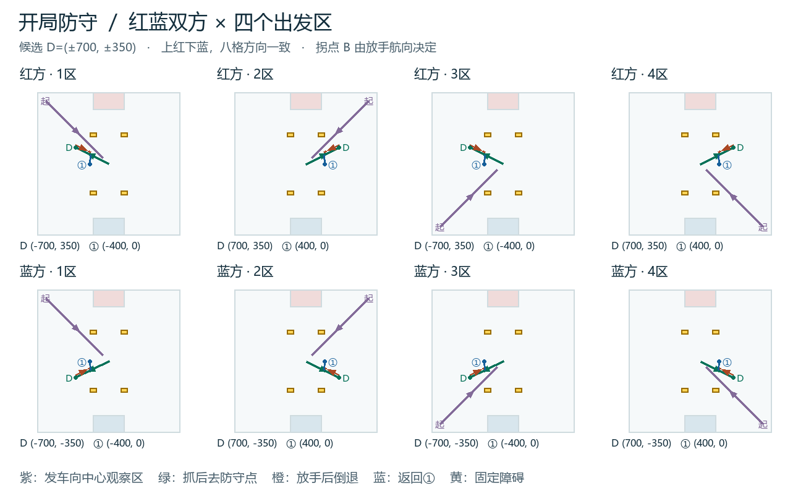

图纸中心为 (0,0)，单位 mm。D 的 x 由出发区决定（1/3 在左，2/4 在右），y 由阵营决定（红正蓝负）。D 是放货时车辆的目标定位点，不是货物落地中心。现行 |x|=700、|y|=550；候选只把 |y| 收到 350。① 恒在 y=0，x 为同侧 ±400，③在另一侧。开局成功暂存后回的是①，不是③，也不是正式送货的门前预备点。
紫线为标称对角发车：按地图默认角点标定，倒退 600、转 180°、前进 1100，进入观察区域。之后是实际夹内检查/识别、接近与抓取，不是一条固定到 (0,0) 的路线。拿到物料并经确认才有 P→D。普通图用 P=(0,0)、准确到 D、放手方向沿 P→D 做两版同条件比较，不表示车必经场心。绿线到 D，黑三角是放货朝向；橙线是相反方向倒车 350。蓝线从实际退完的 B 直返①；到站再转朝场心搜索，不是先把车头转到蓝箭头方向才开动。
偏位图单独改变放手航向：同一红方 D，若车头为 215°，倒车反而靠近黄块。黄块占 |x|=250～400、|y|=560～660，高 25。数字是每段到四块矩形的最小中心距离，没有扣除轮、开爪及载荷外廓，也不是转动扫掠、打滑或碰撞实测。
只看到伤员/疑似伤员，不为它追踪或开爪抓取，开局堆和扫障找回同样适用。“不为伤员开爪”不等于禁用发车、分离、清障或放货时的机构动作。为其他材料抓取时遇到混入的伤员，仍识别并正常分离、按新画面审核，不能将混装当成合法材料。在实际投送预备点仍执行正常判障和扫障，不把疑似伤员框解释为通道畅通。
依据：上位 28deaa6（state_machine.py 的 stash_point、INITIAL_RELEASE、_begin_search_transfer；search_transfer.py），下位 24c7dab（Task.c 的 START、stash_backoff_pending）。开局非空暂存有专门审核分支，这份约定不能靠只从搜索优先级删一个类别实现。本次只更新图稿。